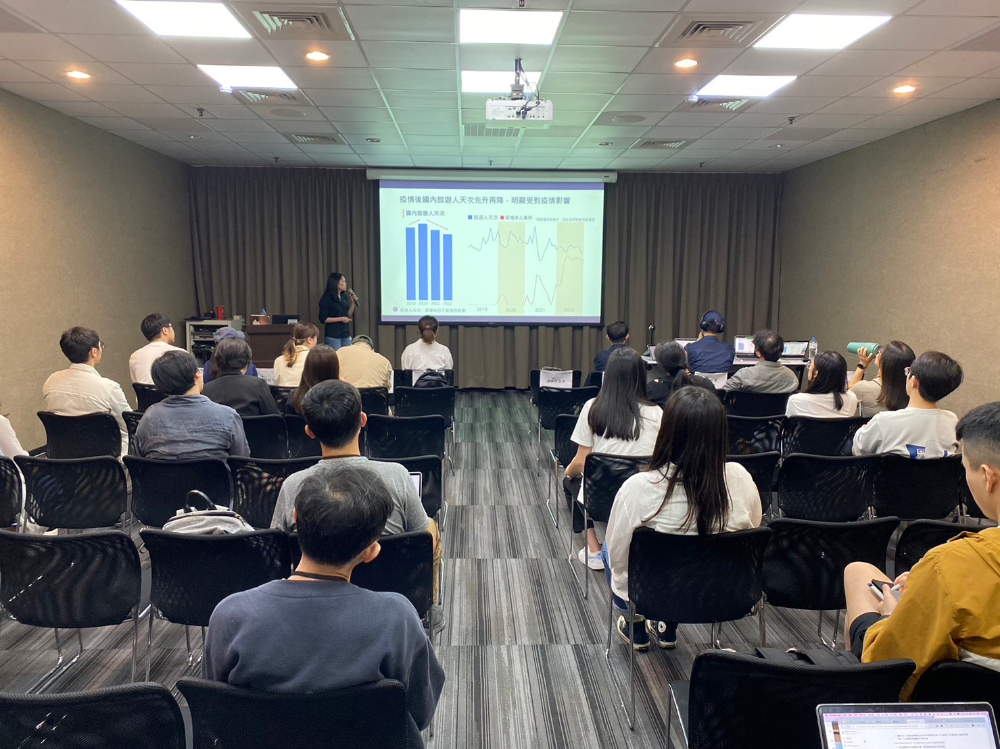

Data Analyst & Strategy
Peggy Sun
旅遊大數據
消費者洞察
行動端數據
於國際四大事務所建立扎實的財務分析與數據查核能力，培養以邏輯拆解問題、以數字驗證假設的思維模式，奠定後續數據決策與商業分析的基礎。
主導品牌網站與行銷規劃，從產品定位、UI/UX 設計到流量經營全程參與，兩個月內粉絲專頁突破千人追蹤，並運用 Google Analytics 優化使用者體驗與轉換成效，培養以市場與成長為核心的思考方式。
負責跨國品牌市場分析與簡報提案，將複雜消費數據轉化為清晰的市場趨勢與策略建議，強化以數據驅動決策與高階溝通的能力。
主導產品功能 AI 化，建立自動化分析流程與決策型報表，提升數據效率與應用深度。整合行動行為數據與公開資料，分析旅遊、零售與消費趨勢，將洞察轉化為可規模化的商業策略與產品優化方向。
具 9 年以上數據分析與產品化經驗，專注以數據驅動商業決策與策略落地，善於整合客戶需求與跨部門資源，將複雜洞察轉化為可執行成果與自動化工具。


具對外分享與公開簡報經驗，習慣以故事化方式溝通數據洞察。


不只是呈現報表，更擅長將枯燥的數據提煉成引人入勝的商業故事，推動關鍵決策。
將單次分析轉向「數據產品化」，建立可重複利用的分析模型，放大商業影響力。
在旅遊、零售與行動數據領域有深厚累積，精確掌握產業痛點與數據應用情境。
釐清為什麼「現在」要做這件事？市場發生了什麼變化？
誰是最終拍板人？影響分析結果的呈現層級與側重點。
如何衡量這次分析的效果？營收、轉化率還是效率提升？
明確「解什麼」與「不解什麼」，避免分析目標過於發散。
在時間、人力與預算之間尋找最佳的分析平衡點。
鎖定最有價值的資料來源，確保洞察有跡可循。
"Better questions lead to better analysis."
這是一份受眾洞察報告，協助品牌深度理解目標客群的行為，並找出最精準的觸達路徑。
初期 Dashboard 使用率低。利害關係人看完數據後常問：「所以呢？我該做什麼決策？」
推動轉化為「全自動簡報式報告」。無需手動操作即可獲取重點，顯著提升內部採用率。
導入 AI 將洞察翻譯成具體的「行銷策略」與「文案建議」，升級為決策支持產品。
整合內部數據與政府開放數據，主動提出並主導執行《台灣旅遊大數據報告》， 藉由觀光產業數據與趨勢洞察，協助公司建立在市場中的專業形象。 發佈後獲得正面回饋，並促進潛在客戶進一步洽詢合作可能。
建立品牌在垂直領域的專業權威感，成為旅遊產業中關鍵的數據參考來源。
透過白皮書與產業報告發佈，被媒體與業界引用，強化公司在產業中的可信度。
吸引潛在客戶主動洽詢，帶動顧問專案與合作機會的成長。
優先考慮如何將數據轉化為營收與決策價值。
具備將想法落地為產品的能力，流暢溝通跨團隊需求。
多年處理旅遊與消費者行動數據，無縫接軌核心業務。